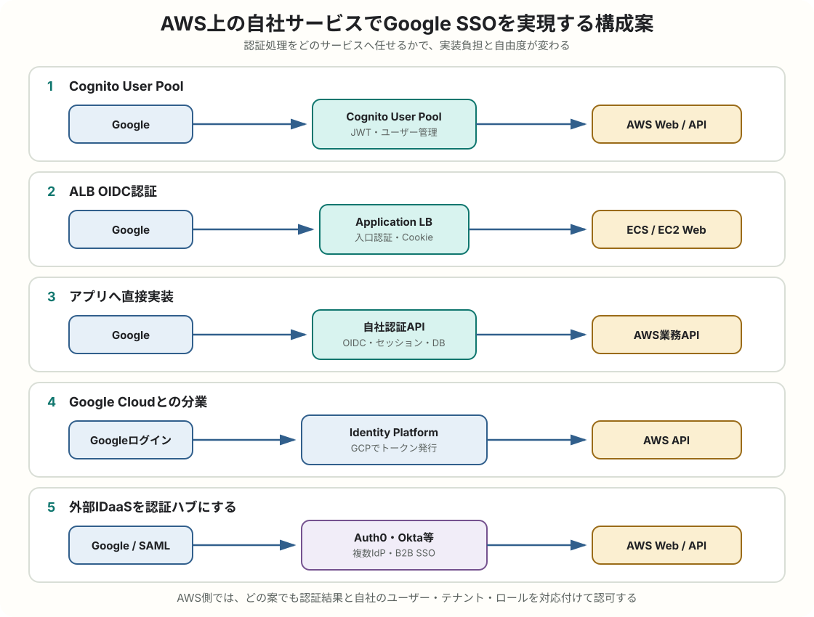

AWS / 認証アーキテクチャ
AWS上の自社サービスでGoogle SSOを実現する構成案
AWSで運用するtoBサービスへGoogle SSOを導入し、企業管理のGoogle Workspaceアカウントと個人Googleアカウントの両方を受け付ける場合の構成を、Cognito、ALB認証、直接実装、Google Cloudとの組み合わせ、外部IDaaSに分けて比較します。
簡潔なQ&A
- Q. AWS上の一般的なWebサービスなら、どの構成が第一候補ですか？
- A. 特別な要件がなければ、Amazon Cognito User Poolsを認証基盤にし、Googleを外部IdPとして連携する構成が第一候補です。Googleとの接続、トークン発行、ユーザーディレクトリをマネージドサービスへ寄せられます。
- Q. Cognitoを使わず、Google OIDCを直接実装してもよいですか？
- A. 可能です。既存の認証・セッション基盤が成熟している場合や、画面・アカウント統合・トークン仕様を細かく制御したい場合に向きます。ただし、脆弱性対応、鍵更新、アカウント復旧、監査などの責任が増えます。
- Q. ALBだけで認証できますか？
- A. ALBのHTTPSリスナーにはOIDC認証アクションがあり、GoogleをOIDC Providerとして入口を保護できます。社内ツールなどには便利ですが、複雑なアカウント管理、ネイティブアプリ、API単体の認証基盤には向きません。
- Q. Google CloudとAWSを組み合わせる意味はありますか？
- A. 既にGoogle Identity PlatformやFirebase Authenticationを標準化している場合は、認証をGoogle Cloud、アプリ実行をAWSに分ける構成が成立します。ただし、障害点、課金、監視、IAM、データ所在地の管理対象は増えます。
- Q. 企業アカウントと個人アカウントの両方を受け付ける場合、どれが向きますか？
- A. AWS中心ならCognito User Pool + Googleが第一候補です。認証フローは共通にし、Workspaceアカウントでは
hdを補助情報としてTenant候補を特定し、個人アカウントでは招待コードや管理者承認など別の方法でTenantへ所属させます。 - Q. 企業のGoogleアカウントと個人のGoogleアカウントで、認証フローを二つ作る必要がありますか？
- A. 通常は必要ありません。同じGoogle OIDCフローとOAuthクライアントを使い、認証後に
hdの有無、自社の招待・契約情報、選択されたTenantでオンボーディングを分けます。どちらも許可する場合、hdがないことは拒否理由ではありません。

この記事のアカウント前提
主な想定は、toBサービスの利用者が、企業管理のGoogle Workspaceアカウントまたは個人Googleアカウントのどちらでもログインできる構成です。認証入口は一つにし、Googleが確認したユーザーを、自社サービスの招待、Tenant、Membership、Roleへ対応付けます。
Workspaceアカウントでは検証済みIDトークンのhdをTenant候補の特定や企業管理アカウントの識別に利用できます。個人アカウントでは通常hdがないため、招待メール、招待コード、管理者承認などでTenantを確定します。どちらの場合も一意な外部IDにはメールではなくissuer + subを使います。
今回の対応範囲と高度なEnterprise SSOの違い
| 段階 | 認証方式 | 必要な機能 |
|---|---|---|
| 今回の主対象 | 共通のGoogleログインを、Workspace・個人Googleアカウントの双方が利用 | issuer + subによる識別、招待、Tenantへの所属、利用状態、ロール管理。Workspaceでは任意でhdも利用 |
| 高度なEnterprise SSO | 顧客企業ごとにGoogle、Entra ID、Okta等のSAML/OIDC接続を登録 | Organization、IdP Discovery、顧客管理者向け設定、JIT、SCIM、証明書・シークレット更新 |
今回の要件だけなら、顧客ごとのSAML接続やSCIMは必須ではありません。ただし、企業アカウントだけを許可したい、退職者のWorkspace停止を直ちに反映したい、顧客管理者がユーザーを自動作成・削除したい、といった要求が出たら、企業アカウント限定ポリシーや高度なEnterprise SSO、プロビジョニング連携を追加します。
企業アカウントと個人アカウントは別フローにするのか
Google OIDCから見ると、どちらもGoogleアカウントであり、認可エンドポイント、トークンエンドポイント、Authorization Code Flow、IDトークン検証は共通です。企業用と個人用にOAuthクライアント、コールバックAPI、ログインボタン、セッション実装を二重に用意する必要は通常ありません。
| 項目 | Google Workspace管理アカウント | 個人・管理外Googleアカウント |
|---|---|---|
| OIDC認証フロー | 共通 | 共通 |
| 利用するOAuthクライアント | 原則共通 | 原則共通 |
IDトークンのhd |
Google WorkspaceまたはCloud組織のドメインが入る | 通常は存在しない |
| 自社サービスの判定 | hdをTenant候補として使い、招待・Membership・ロールを確認 |
招待コードや管理者承認でTenantへ所属させ、Membership・ロールを確認 |
認証と認可を分けて考えることが重要です。Googleが「このGoogleアカウントの本人である」と確認する処理は同じです。その後、自社サービスが招待、Tenant、Membership、Roleを確認します。WorkspaceアカウントのhdはTenant候補を特定する材料にはなりますが、個人アカウントも許可する構成では必須条件にしません。
hdパラメーターとクレームを混同しない
認証リクエストのhdパラメーターは、特定ドメインのアカウントを選びやすくする画面上のヒントです。アクセス制御には使えません。Workspace情報が必要な場合は、認証後に署名検証したIDトークンのhdクレームを確認します。Google公式資料も、WorkspaceまたはCloud組織のメンバーへ限定するときはhdクレームを検証し、メールアドレスのドメインだけでは判定しないよう案内しています。
企業アカウントのみに限定する場合
本記事の標準案は個人アカウントも許可します。セキュリティポリシーや契約条件により企業管理アカウントだけを許可する場合に限り、hdが存在し、契約企業の許可ドメインに一致することを必須条件にします。個人Gmail、管理外Googleアカウント、未契約ドメインは拒否し、その理由をログイン画面で説明します。
二つのフローが必要になる例外
- 企業ユーザーと個人ユーザーで、OAuth同意画面、ブランド、契約主体、データ利用条件を明確に分離したい。
- 企業向け環境と個人向け環境を、ドメイン、AWSアカウント、データベース、セキュリティ境界ごと分離している。
- 企業向けには顧客別SAML/OIDC、個人向けにはGoogleソーシャルログインを使うなど、IdP自体が異なる。
これらは「Googleの企業アカウントと個人アカウントでOIDC仕様が違うから」ではなく、製品・契約・インフラの境界を分ける要件があるためにフローを分けるケースです。
構成案の比較
| 構成 | 向いているケース | 両アカウント対応への適性 | 実装負担 | 主な注意点 |
|---|---|---|---|---|
| Cognito User Pool + Google | AWS中心の一般向けWeb・モバイルサービス | 最も向く | 低〜中 | 共通Googleログインをマネージド化できる。個人は招待、Workspaceは任意でhdも使い、Tenantと認可は自社管理。 |
| ALB + Google OIDC | ALB配下の社内ツール、管理画面、小規模Web | 条件付き | 低 | ブラウザ専用の単純なサービスなら可能。テナント所属、招待、API認証はアプリ側で補う。 |
| アプリへ直接実装 | 既存認証基盤がある、特殊要件が多いサービス | 向くが高コスト | 高 | アカウント種別ごとのオンボーディングを自由に作れるが、認証・セッション運用を自社で負う。 |
| Google Identity Platform + AWS | Firebase/GCPとの共通認証、マルチクラウド | 向く | 中 | Firebase/GCP標準化済みなら有力。Googleログインだけならマルチクラウド化が過剰な場合もある。 |
| Auth0・Okta等のIDaaS + AWS | 複数IdP、B2B、Enterprise Federationが重要 | 向くが過剰になりやすい | 低〜中 | 個人・企業Googleの双方に対応でき、将来のSAML・SCIMにも強いが、Googleログインだけなら過剰になりやすい。 |
両方を受け付ける共通ログイン判定
- Googleまたは仲介する認証基盤が発行したトークンについて、署名、
iss、aud、expを検証する。 - 外部ユーザーの識別には
issuer + subを使い、メールアドレスは連絡先・表示属性として扱う。 hdがある場合はWorkspace管理アカウントとして記録し、契約企業の許可ドメインと一致すればTenant候補にする。hdがなくても個人アカウントとして処理を続ける。- 招待トークン、招待先メール、既存Membership、管理者承認などから参加先Tenantを確定する。ドメイン一致だけで無条件に加入させるかは契約企業ごとに設定する。
- 契約が有効か、ユーザーとMembershipが停止されていないか、必要なロールがあるかを自社DBで確認する。
- 検証後に自社サービスのセッションまたはアプリ用トークンを発行する。
tenants
id
name
contract_status
workspace_only # trueなら企業管理アカウントだけ許可
tenant_google_domains
tenant_id
hosted_domain # hd と照合。個人アカウントでは未使用
auto_join_enabled
external_identities
user_id
issuer
subject # Googleの sub
account_type # workspace / personal / unknown
hosted_domain # Workspaceの場合のみ
invitations
tenant_id
invited_email
token_hash
expires_at
tenant_memberships
tenant_id
user_id
role
status
Workspaceアカウントはhd一致でJIT登録し、個人アカウントは招待必須にする、といった差を設けられます。ただし、同じ人物が会社アカウントと個人アカウントを使う可能性があるため、メール一致だけでアカウントを自動統合しません。ログイン済み状態での明示的な紐付けや、管理者による確認手順を用意します。
Google Workspaceでの停止と自社セッション
企業管理者がGoogle Workspaceアカウントを停止しても、すでに発行済みの自社サービスのセッションが直ちに消えるとは限りません。セッションを短めにする、一定時間ごとに再認証する、自社管理者が利用者を停止できるようにするなどの対策が必要です。即時性の高い入退社連携が必要になった場合は、SCIMや管理APIを使う高度なプロビジョニング要件として切り分けます。
個人アカウントで必要な追加配慮
- 個人アカウントには企業による停止・回収の保証がないため、Tenant管理者がMembershipを停止できるようにする。
- 会社を離れた後も個人アカウント自体は有効なので、契約企業側の定期棚卸しや有効期限付きMembershipを検討する。
- 個人アカウントを許可するTenantと、Workspace限定のTenantを設定で分ける。
- 会社メールと個人Googleアカウントのメールが異なる場合に備え、招待トークンとログイン済みIDを安全に結び付ける。
案1: Cognito User PoolにGoogleを連携する
両アカウント対応への適性: 最も向く
Googleアカウント種別にかかわらず共通のログイン経路を提供できます。Cognitoは認証とJWT発行を担い、自社DBは招待、Tenant、Membership、Roleを管理します。Workspace情報をオンボーディングや企業限定ポリシーに使う場合だけ、hdをCognitoトークンへ反映できる構成か確認します。
構成
ブラウザ / モバイルアプリ
-> Cognito Managed Login またはアプリのログイン画面
-> Googleで認証
-> Cognito User Pool
-> CognitoのID token / access token
-> API Gateway・ALB・アプリAPI
-> ECS / Lambda / EC2 + RDS・DynamoDB
Amazon Cognito User Poolsを自社サービスのIdPとして置き、その外部ソーシャルIdPにGoogleを登録します。Googleの認証後、アプリが利用するのは通常Googleのトークンではなく、Cognitoが発行したJWTです。API GatewayのJWT Authorizer、ALB、またはアプリのJWT検証処理でCognitoトークンを検証します。
メリット
- Google、Apple、SAML、OIDC、Cognitoローカルユーザーなどを同じUser Poolへ集約しやすい。
- トークン発行、署名鍵公開、ユーザーディレクトリ、MFA、パスワードポリシーなどをマネージド化できる。
- API Gateway、ALB、LambdaなどAWSサービスとの接続パターンが豊富。
- Googleログイン以外の認証方式を追加するとき、アプリ側のトークン検証先をCognitoに統一できる。
デメリットと設計ポイント
- ログインUI、クレーム、トークン有効期限、ユーザー属性をCognitoの仕様へ合わせる部分がある。
- Googleユーザーと既存Cognitoユーザーを自動的に同一人物とみなす設計は避け、アカウントリンク手順を明示する。
- Pre Token Generation、Pre Sign-upなどLambdaトリガーを増やしすぎると、認証処理が追いにくくなる。
- CognitoのサインアウトとGoogleのサインアウトは別であり、Googleセッションが残れば再ログインは短縮される。
- Workspace情報を利用する場合は、Googleから受け取る
hdをCognitoへどうマッピングし、どこで検証するかを事前に確認する。 - Googleアカウントで認証済みであることと、自社サービスのTenantへ所属して利用を許可されていることは別なので、招待・Membership・状態確認を省略しない。
企業アカウント情報としてhdを使うときの注意
Cognitoの組み込みGoogleソーシャルIdPでは、Googleから取得した属性をUser Pool属性へマッピングします。ただし、管理画面で選べる既知属性やCognitoが取得するレスポンスに、要件どおりhdが含まれてアプリのトークンへ渡るかを確認してください。メールアドレスだけを代用すると、Google Workspace管理下かどうかを厳密に判定できません。
hdが組み込みGoogle連携で取得できない場合は、GoogleをCognitoの汎用OIDC IdPとして設定し、IDトークンのhdを可変のカスタム属性へマッピングする構成を検証します。それでも取得できない場合、両アカウントのログイン自体は継続できますが、Workspace判定を使う機能は提供できません。企業限定ポリシーが必須なら、Google IDトークンを自社認証APIで直接検証する構成を選びます。
User PoolとIdentity Poolを混同しない
User Poolはアプリ利用者の認証とJWT発行を担います。Identity Poolは、認証済みユーザーへ一時的なAWS認証情報を渡し、S3などのAWSリソースへ直接アクセスさせる用途です。通常のWeb APIへログインさせるだけならUser Poolが中心で、Identity Poolは必須ではありません。
案2: ALBのOIDC認証でGoogleを直接使う
両アカウント対応への適性: 条件付き
ブラウザだけで利用する単純なtoB Webサービスなら、企業・個人を問わない共通Googleログインとして利用できます。ただしALBは認証済みであることを入口で確認する層であり、招待、Tenant、Membership、Role、アカウント種別ごとのポリシーは自社アプリで判定します。モバイルアプリ、外部API、細かなセッション制御がある製品ではCognitoまたはアプリ認証基盤のほうが扱いやすくなります。
構成
ブラウザ
-> Application Load Balancer
-> Google OIDCへリダイレクト
-> 認証後にALBセッションCookieを発行
-> ECS / EC2 / LambdaのWebアプリ
Application Load BalancerのHTTPSリスナールールにauthenticate-oidcを設定し、Googleの認可・トークン・UserInfoエンドポイントを登録します。ALBが認証フローとセッションCookieを処理し、認証済みユーザー情報をHTTPヘッダーでターゲットへ渡します。
向いているケース
- ブラウザから利用する社内ツールや管理画面。
- すでにALB配下で動いており、アプリ改修を小さくしたいサービス。
- 入口で未認証アクセスを遮断し、アプリではロール判定だけ行いたい場合。
制約
- ALBの保護範囲はリスナー配下のHTTPアクセスであり、モバイルアプリや外部APIクライアントのBearer token基盤とは役割が違う。
- ALBが渡すクレームを使う場合も、ターゲットへの通信経路をALBだけに限定し、ヘッダー偽装を防ぐ。
- ユーザー登録、利用規約同意、アカウント統合、テナント・ロール管理はアプリ側に残る。
- クライアントシークレットはAWS Secrets Manager等で管理し、更新手順を用意する。
案3: アプリケーションへGoogle OIDCを直接実装する
両アカウント対応への適性: 向くが高コスト
hdがあるWorkspaceアカウントと、hdがない個人アカウントのオンボーディングを自由に実装できます。ただし、Cognitoで代替できる認証フロー、トークン検証、セッション、秘密管理、障害対応まで自社で保守することになります。既存の認証基盤へ統合する明確な理由がある場合に選びます。
構成
ブラウザ
-> CloudFront / ALB / API Gateway
-> 自社認証API
-> Google OIDC
-> external_identitiesテーブル
-> セッションストア
-> 業務API
自社バックエンドをGoogleのRelying Partyとして実装し、Authorization Code Flow、IDトークン検証、外部IDの紐付け、自社セッション発行を直接扱います。AWSは実行・保存基盤として利用し、たとえばECSまたはLambda、RDSまたはDynamoDB、ElastiCache、Secrets Manager、CloudWatchを組み合わせます。
メリット
- 既存のユーザーDB、セッション、監査、リスク判定へ自然に統合できる。
- ログイン画面、アカウント統合、テナント選択、トークン・Cookie設計を細かく制御できる。
- 認証ライブラリやデータモデルを適切に抽象化すれば、複数IdPへ拡張できる。
自社が負う責任
state、nonce、PKCE、Redirect URI、IDトークン署名・iss・aud・expの検証。- Googleの
subを使った外部ID管理と、安全な既存アカウント紐付け。 - セッション固定攻撃、CSRF、Cookie、失効、再認証、ログアウトの設計。
- ライブラリ更新、障害監視、監査ログ、秘密情報ローテーション、インシデント対応。
「OAuth/OIDCコードを自分で書く」という意味のフルスクラッチは避け、十分に保守されたOIDCライブラリを使います。スクラッチにするのは、認証フローを配置するアーキテクチャと自社のユーザー・セッション統合部分です。
案4: Google Identity Platformで認証し、AWS APIを利用する
両アカウント対応への適性: 向く
Firebase AuthenticationやGoogle Cloudをすでに利用している場合は有力です。企業・個人Googleアカウントの共通ログインとユーザー管理をIdentity Platformへ置き、AWS側で検証済みUIDを招待とTenantへ対応付けます。ただし、Googleログインだけを新規導入するためにAWSとGCPの二つを運用するなら、Cognitoより構成が複雑になる可能性があります。
構成
Web / モバイルアプリ
-> Google Identity Platform / Firebase Authentication
-> Google側が発行したID token
-> Amazon API Gateway / ALB / 自社API
-> JWTを検証
-> Lambda / ECS + AWS上のDB
認証基盤をGoogle Cloud Identity PlatformまたはFirebase Authenticationへ置き、アプリ本体とデータ基盤をAWSで運用します。AWS側APIはGoogle側の公開鍵、Issuer、Audienceに基づいてJWTを検証し、検証済みのUIDを自社ユーザーへ対応付けます。
採用しやすい条件
- Web・モバイルアプリですでにFirebase Authenticationを利用している。
- 複数プロダクトの認証をGoogle Cloud側へ統一している。
- Google CloudのIdentity Platform機能とAWSのコンピューティング・データ基盤を組み合わせたい。
注意点
- 認証障害の切り分けがGoogle Cloud、ネットワーク、AWS APIにまたがる。
- AWS側でJWT検証設定、ユーザーマッピング、認可を実装する必要がある。
- ログ、監査、課金、データ処理契約、リージョン・データ所在地を2クラウド分管理する。
- Google Identity Platformを使うことと、Googleアカウントだけを許可することは別問題であり、許可するIdPとテナントを設計する。
案5: 外部IDaaSを認証ハブにする
両アカウント対応への適性: 向くが過剰になりやすい
企業・個人Googleアカウントの双方に対応し、Organizationや招待も統合しやすい構成です。ただしGoogleログインだけならCognitoより機能と費用が過剰になりやすくなります。将来、顧客企業ごとのSAML/OIDC接続、Microsoft Entra ID、IdP Discovery、管理ポータル、SCIM Directory Syncまで提供する計画が明確なら、早い段階から採用する価値があります。
構成
Google / Microsoft Entra ID / SAML IdP
-> Auth0・Okta・WorkOS等のIDaaS
-> IDaaSが発行したトークン
-> AWS上のWeb・API
複数の企業IdPやソーシャルログインをIDaaSへ集約し、AWS上のアプリはIDaaSだけを信頼します。顧客企業ごとのSAML/OIDC接続、Organization、招待、Enterprise SSO、SCIMなどが重要なB2B SaaSで候補になります。
機能を早く揃えやすい一方、月間アクティブユーザー、Enterprise Connection、MFA、ログ保持などで料金が変わります。障害時の影響、ユーザーデータの移行性、トークン仕様への依存も評価します。
要件別の選び方
| 要件 | 選びやすい案 | 理由 |
|---|---|---|
| AWS中心で企業・個人Googleの双方を受け付けるtoBサービス | Cognito User Pool | Google連携をマネージド化し、招待・Tenant・Membership・認可を自社DBで管理できる。 |
| ALB配下の社内管理画面を早く保護 | ALB OIDC | アプリ改修を抑え、入口で認証できる。 |
| 既存認証基盤と特殊なアカウント統合 | アプリ直実装 | ユーザー・セッションモデルを自由に設計できる。 |
| Firebaseを使うWeb・モバイル製品 | Google Identity Platform + AWS | クライアント側の既存認証をAWS APIでも利用できる。 |
| 将来、顧客企業ごとのSAML/OIDC・SCIMを提供 | 外部IDaaS | B2B向け接続とライフサイクル機能を導入しやすい。 |
| 少数の顧客企業へ運営者が個別にSSO設定 | Cognito User Pool | SAML/OIDC接続は可能。顧客別管理とプロビジョニングは追加実装する。 |
| GCPを併用し、TenantごとにIdPとユーザーを分離 | Google Identity Platform | B2B向けマルチテナンシーとSAML/OIDC Federationを利用できる。 |
共通してAWS側に必要なもの
- Route 53、ACM、CloudFrontまたはALBによるHTTPS公開。
- AWS WAF、レート制限、認証エンドポイントの監視。
- Secrets ManagerまたはSSM Parameter Storeによるクライアントシークレット管理。
- CloudWatch Logs・Metrics、CloudTrail、必要に応じた監査ログ保管。
- ユーザーIDと外部IdPの
issuer + subjectを対応付けるDB。 - 認証と分離された、自社サービスのテナント・ロール・契約状態による認可処理。
- 開発、ステージング、本番ごとに分離したOAuthクライアントとRedirect URI。
おすすめの初期判断
- AWS中心の新規構成なら、Cognito User Pool + Googleを第一候補にする。
- 自社DBへTenant、Invitation、Membership、Role、利用状態を持たせ、Googleアカウント種別に依存しない所属管理を作る。
- Workspaceアカウントでは任意で
hdをTenant候補やJIT登録に使い、個人アカウントでは招待・承認でTenantを決定する。 - ブラウザ専用で要件が単純ならALB OIDCも比較するが、API・モバイル・細かなセッション制御が必要なら避ける。
- 既存のFirebase/GCP認証基盤がある場合だけ、Google Identity Platformとの分業を優先的に比較する。
- 既存認証基盤への深い統合が必要な場合に、直接実装を検討する。
- 顧客別SAML/OIDC、Entra ID、SCIMがロードマップへ入った時点で外部IDaaSを再評価する。
要点
企業管理のGoogle Workspaceアカウントと個人Googleアカウントは、通常は同じGoogle OIDCフローで受け付けます。AWS中心ならCognito User Pool + Googleが標準候補です。自社DBではissuer + subを外部IDとし、招待、Tenant、Membership、Roleを管理します。hdはWorkspaceアカウントのTenant候補特定や、企業アカウント限定Tenantの追加条件として使い、個人アカウントには招待・承認による参加経路を用意します。